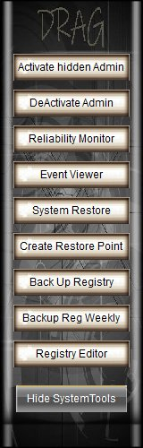
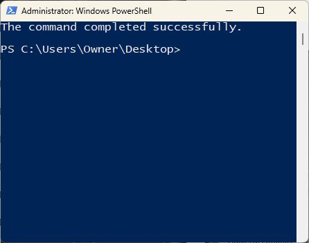
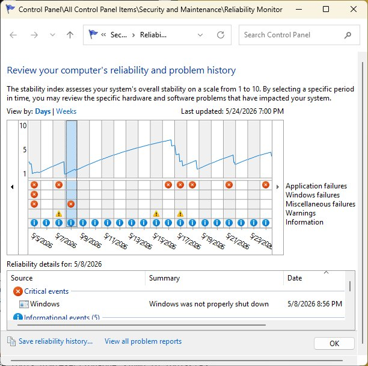
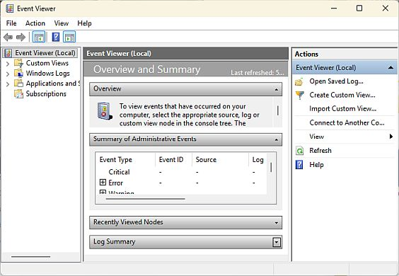
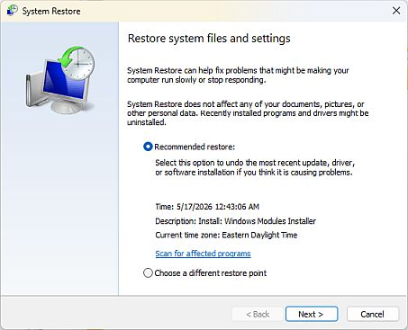
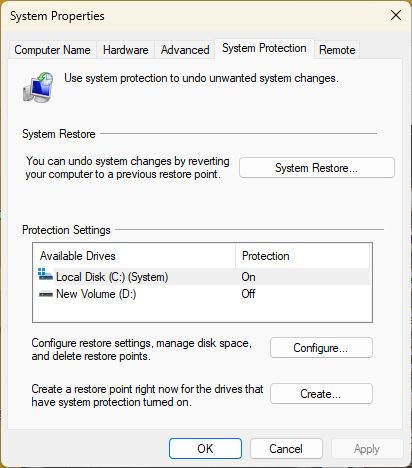
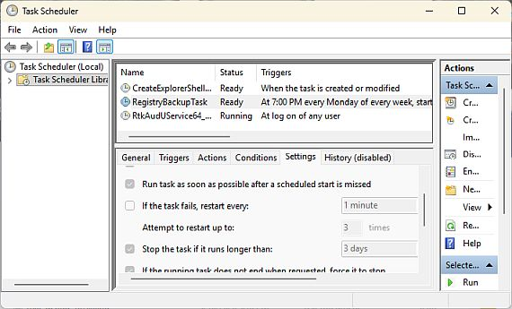
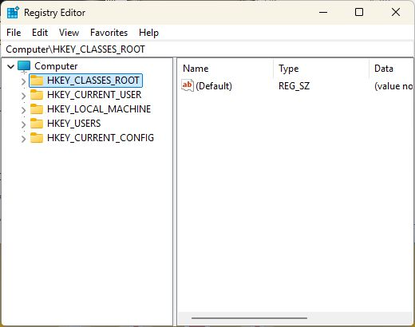

 |
Vics One app TechTool SystemTools Window1: Activate Hidden Admin 2: Deactivate Admin 3: Reliability Monitor 4: Event Viewer 5: System Restore 6: Create Restore Point 7: Back Up Registry 8: Weekly Registry Backup 9: Registry Editor |
=========================================
Vics One app TechTool 1- Activate Hidden AdminActivate the built-in, hidden Administrator account in Windows To Access It: Sign out of your current account or lock your screen (Win + L). The "Administrator" profile will now appear in the bottom-left corner of the login screen. |
Activate Hidden Administrator Account:
net user administrator /active:yes
=========================================
| |
Vics One app TechTool 2- Deactivate Administrator Account |
Hide Administrator Account:
net user Administrator /active:no
=========================================
|
|
Vics One app TechTool 3- Opens Reliability MonitorWindows Reliability Monitor is a built-in troubleshooting tool that provides a timeline of your computer's health and system stability history. It acts as a much simpler, more user-friendly alternative to the cluttered Event Viewer, charting exact dates of crashes, software updates, and hardware alerts. |
=========================================
Vics One app TechTool 4- Opens Event ViewerWindows tool that logs every major system, security, and application event. troubleshoot group policy failures, script execution errors, or registry permission issues. |
=========================================
Vics One app TechTool 5- System RestoreBuilt-in Windows recovery tool that creates snapshots of your system files, registry settings, and program configurations |
=========================================
Vics One app TechTool 6- Create Restore Point |
Important Scripting Note
Windows limits automatic restore point creation to once every 24 hours by default.
If your script runs create restore multiple times a day, subsequent attempts will be ignored unless you modify the
registry throttle using this command:
Set-ItemProperty -Path "HKLM:\SOFTWARE\Microsoft\Windows NT\CurrentVersion\SystemRestore"
-Name "SystemRestorePointCreationFrequency" -Value 0
-Name "SystemRestorePointCreationFrequency" -Value 0
=========================================
=========================================
Vics One app TechTool 8- Weekly Registry BackupsReg backup added to schedule tasks, runs weekly Script: Same as above only task sched added. |
=========================================
Vics One app TechTool 9- Registry EditorRegistry Editor (regedit.exe) is the graphical tool used to view and change the Windows Registry database. |
=========================================